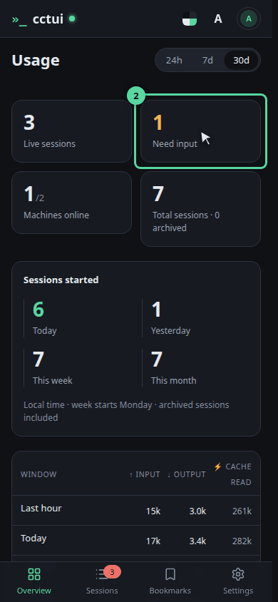
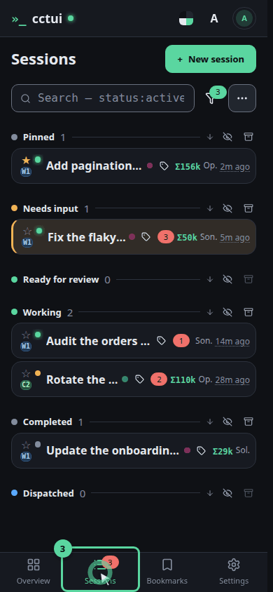
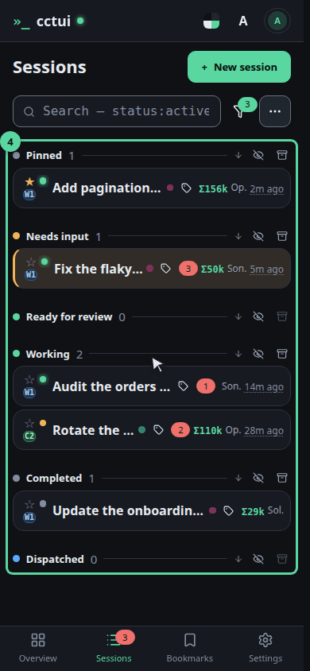
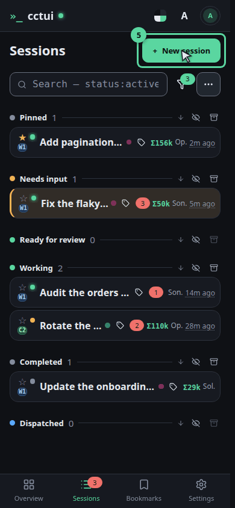
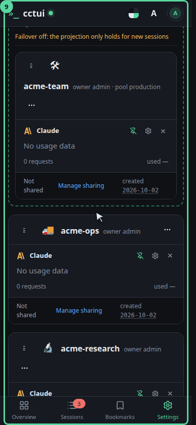
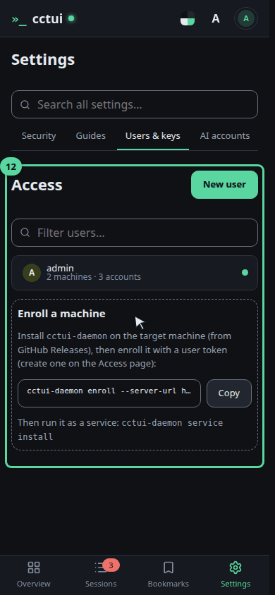
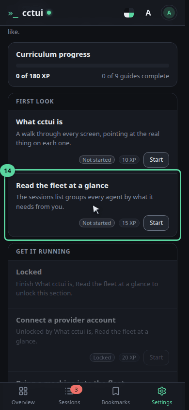

Start here: is the fleet healthy? One control room for every coding agent you run. These tiles answer the first question before you touch anything — what is live, what is stuck, which machines are up.

The only number that needs you An agent waiting on an answer stops making progress until you reply. That is why this count sits on the landing page rather than inside a list you have to go looking for.

The nav is the whole app Every page hangs off this rail. Sessions is where most of the work happens — open it.

Sessions — where the work happens Every run you have started, grouped by what it needs from you. The ones blocked on an answer rise to the top, so a long fleet still reads in one glance.

Starting one This turns a prompt into a running agent: pick the machine, the folder and the account, and it works in the background whether or not you keep the tab open.

AI accounts — the credentials work runs on Provider accounts can be grouped into pools, and a session can draw from a pool rather than one fixed account, so one hitting a rate limit steps aside instead of stalling the queue.

Users & keys — who may run work Machines supply the compute, and they join the fleet from here with a single enrolment command. If a session cannot find anywhere to run, this is the page to open.

Now walk it for real That is every screen. The rest of the guides run inside the app and point at the real controls in order — read the fleet, connect an account, enrol a machine, start a session, follow it. Start with this one.